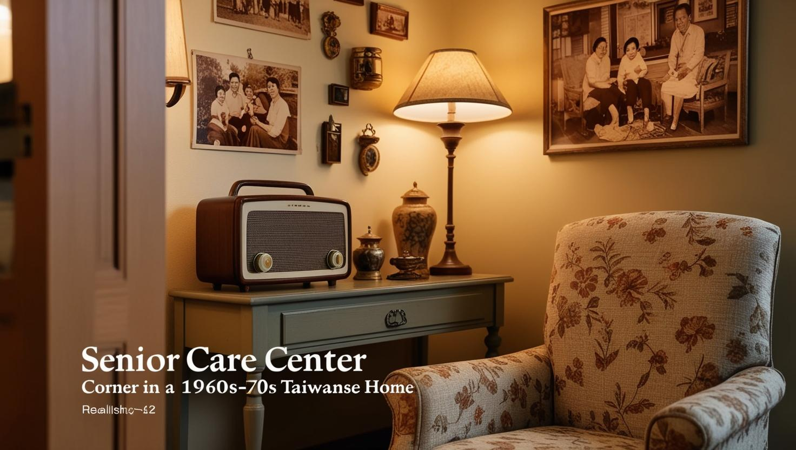

懷舊回憶角 (Nostalgia Corner - YouTube 播放)
正在載入懷舊 YouTube 音樂...

「懷舊回憶角」是記憶花園中一個充滿溫馨與故事的特別角落。我們精心佈置了這個空間，希望透過熟悉的物件、氣味與聲音，輕輕敲開長輩們記憶的門扉，讓他們在這裡找到慰藉、樂趣與連結。
每一件展品都經過細心挑選，旨在引發正向的情感連結，鼓勵長輩們分享他們的人生故事，促進社交互動，並從回憶中汲取力量。
特色與效益
- 喚醒長期記憶：透過視覺、觸覺、聽覺等多感官刺激，幫助長輩連結到過去的愉快經驗。
- 促進語言表達：熟悉的物件能成為談話的起點，鼓勵長輩開口分享。
- 增進社交互動：共同的回憶能拉近長輩之間、以及長輩與照護者、家屬的距離。
- 提升自我價值感：分享個人生命故事能讓長輩感受到被尊重與肯定。
- 情緒舒緩：沉浸在美好的回憶中，有助於減輕焦慮與不安。
空間佈置與氛圍
我們致力於營造一個既安全又引人入勝的懷舊氛圍：
- **視覺元素：**牆上掛著台灣五、六零年代的電影海報、家庭老照片；櫥窗裡展示著舊時的菸酒牌、明星花露水、大同寶寶等。
- **聽覺元素：**背景播放著與時代相符的懷舊歌曲或輕音樂，營造氛圍。
- **觸覺元素：**擺放著觸感溫潤的木製傢俱、柔軟的花布抱枕、以及可以把玩的舊時童玩。
- **安全考量：**所有擺設都穩固不易傾倒，地面平整無障礙，光線充足但柔和。
在這裡舉辦的活動
- 「我的故事・你的歌」生命故事回顧
- 懷舊金曲卡拉OK（可配合 YouTube 播放伴奏）
- 老電影欣賞與討論會
- 「想當年」主題茶話會
- 傳統手作體驗